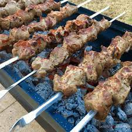

Shashlik Recipe

Description:
Do you like Kabos.It seems like every country has their own version.
Try these delicious Russian Meat Kabobs. Russian Kabobs is truly a tradition in Russia. Everyone gets together and grills
Ingredients:
- 500 grams of meat
- 2 onions
- 100 grams of green onions
- 2 tomatoes
- 1 tsp lemmon juice
- 1 Tbs of vineagar
- 1 Tbs of oil
Directions
- Mix lemmon juice, vineagar, and oil in a bowl
- Cut meat in little squares, add to bowl mixture, marinade for 3+ hrs
- After done marinating the meat, place the meat on skewers alternating between meat,onions,tomatoes
- Place on smoker or grill for 15-30 min on high
- Enjoy with sour cream